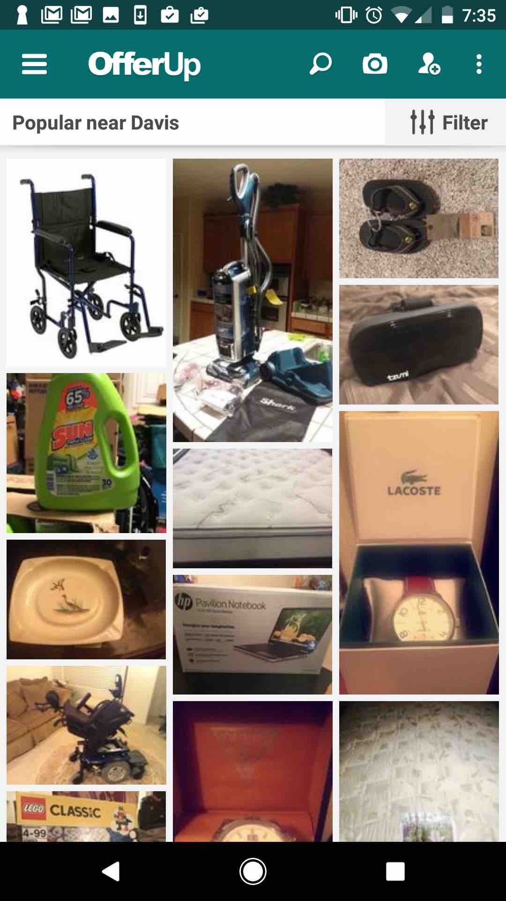

Comparative Research
Forward
Forward: re-use for charity is an online community where you gather donations for your favorite charity by giving stuff away. The buyer pays a small fee, and that fee goes to a charity chosen by the seller. The app is extremely simple to use. On startup, one can create an account or link it to a social media account such as facebook. Once logged in, the app uses your location and presents this menu in the picture. From this menu, the user can choose from a list of items that are nearby. In this location in Davis, there were only two items. You can check your activity or see your items that you have on sale. The plus icon on the bottom right allows you to take a photo to post an item to sale. The top left menu icon leads to a navigation with account information, social networking, and help features.
Offerup

Offerup is not a charity platform, but still uses the idea of trading and selling used items to recycle them. The interface is more intuitive than Forward, but it similar in many ways. The navigation interface is all located at the top, with the menu icon the same as Forward. This interface includes all the same options that Forward has, but also includes a search tool and filter. The items are arranged similary to Forward, with a simple interface. The pictures are in a grid with no distractions so the user can easily scroll down the page to see which items are for sale. This app has many more items on the app and is much more popular.